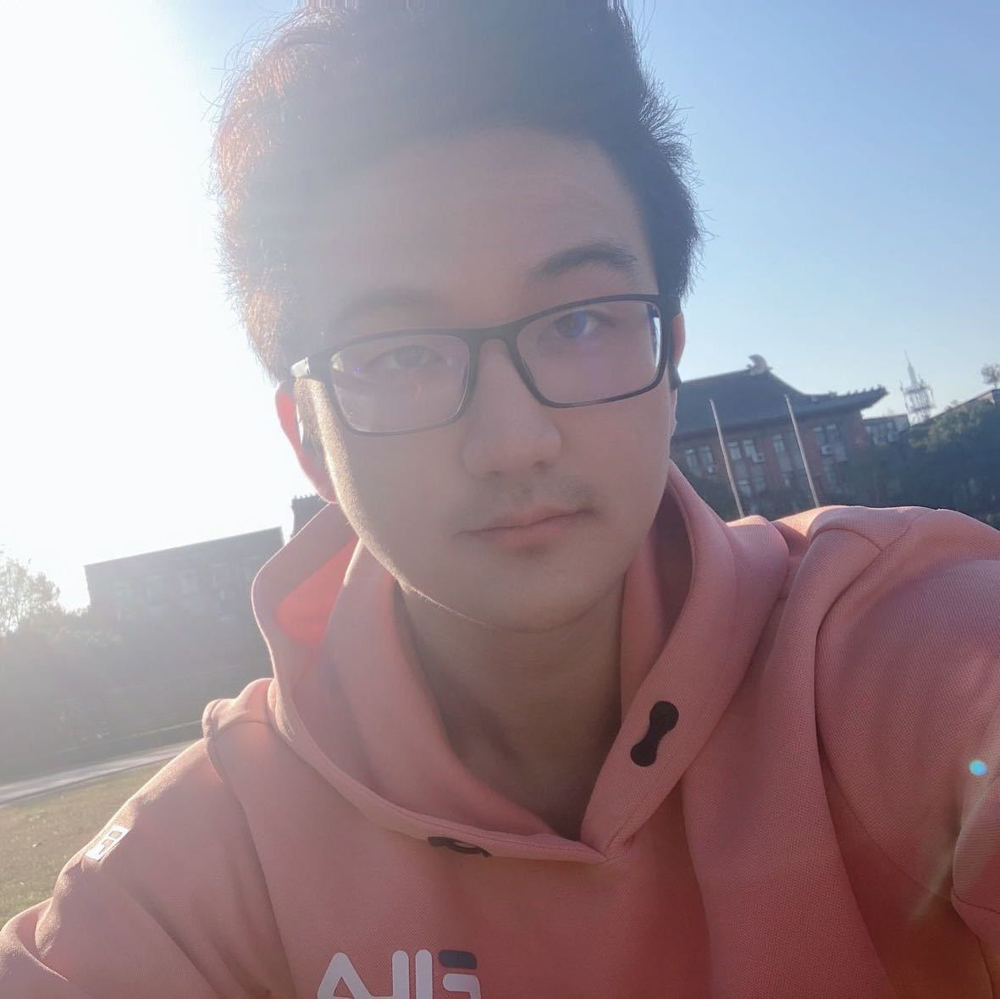

Jiateng LiuI'm currently an undergraduate student of Zhejiang University. I have participated in several research projects at Zhejiang University, UIUC and Stanford University. For summer 2022, I'm interning at Blender lab, instructed by prof. Heng Ji. |
 |
ResearchI'm interested in the area of CV/NLP intersections, especially in diving into the mechanisms of multimedia aligning methods and employing multimedia pretrained models to facilitate text understandings. Due to my wonderful research experience at Standford. I also have some knowledge in 3D vision area. 3D object reconstruction with implicit nerual representations is appealing to me I will be a PhD applicant in 2023 Fall. To know more about me, please check my curriculum vitae here. Please feel free to contact me. |
I'm currently an undergraduate student of Zhejiang University.
I have participated in several research projects at Zhejiang University, UIUC and Stanford University.